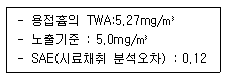
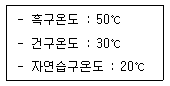
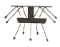
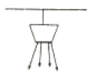
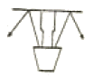
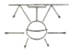

산업위생관리기사 (2007-05-13 기출문제)
1과목: 산업위생학개론
1. 국제노동기구가 선언한 "산업보건"의 정의에 포함되지 않은 것은?
- 노동생산성의 원리
- 작업조건으로 인한 질병의 예방
- 적합한 작업환경에 근로자의 배치
- 근로자의 육체적, 정신적, 사회적 건강의 유지, 증진
(정답률: 80%)

2. 작업적성검사 중 생리적 기능검사라로 볼 수 없는 것은?
- 감각기능검사
- 체력검사
- 심폐기능검사
- 지각동작검사
(정답률: 69%)
3. 심한 노동 후의 피로 현상으로 단기간의 휴식에 의해 회복될 수 없는 병적상태를 무엇이라고 하는가?
- 곤비
- 피로경련
- 피로중증
- 과로
(정답률: 90%)
4. 다음 중 직업성 변이를 가장 잘 설명한 것은?
- 직업에 따라서 체온의 변화가 일어나는 것
- 직업에 따라서 신체형태와 기능에 국소적 변화가 일어나는 것
- 직업에 따라서 신체활동의 영역에 변화가 일어나는 것
- 직업에 따라서 신체의 운동량에 변화가 일어나는 것
(정답률: 87%)
5. 다음 중 전신피로의 원인에 대한 내용으로 틀린 것은?
- 산소공급 부족
- 혈중 포도당 농도의 저하
- 근육 내 글리코겐 양의 증가
- 작업강도의 증가.
(정답률: 80%)
6. 플리커 테스트(Flicker test)의 용도로 가장 적절 한 것은?
- 진동측정
- 소음측정
- 피로도 측정
- 열중증 판정
(정답률: 76%)
7. 작업시간과 피로와의 관계를 기술한 것 중 옳은 것은?
- 작업시간의 장단은 피로와 관계되는 것이며 작업강도는 그다지 문제가 되지 않는다.
- 작업강도가 클수록 실동율이 떨어지므로 휴식시간이 길어진다.
- 작업강도가 클수록 실동율이 증가하므로 휴식시간이 짧아진다.
- 작업강도는 작업대사율과 관계되며 실동율과는 무관하다.
(정답률: 83%)
8. ACGIH에서 제안하는 'TLV-TWA"를 가장 옳게 설명 한 것은?
- 1일 8시간 및 1주일 48시간 동안의 평균동도로서, 모든 근로자가 나쁜 영향을 받지 않고 노출 될 수 있는 농도이다.
- 1일 8시간 1주일 40시간 동안의 평균농도로서, 거의 모든 근로자가 나쁜 영향을 받지 않고 노출될 수 있는 농도이다.
- 1일 8시간 및 1주일 45시간 동안의 평균농도로서, 거의 모든 근로자가 나쁜 영향을 받지 않고 노출 될 수 있는 농도이다.
- 1일 8시간 및 1주일씩 44시간 동안의 평균 농도로서, 모든 근로자가 나쁜 영향을 받지 않고 노출될 수 있는 농도이다.
(정답률: 96%)
9. 다음 중 실질적인 재해의 정도를 가장 잘 나타내는 재해 지표는 어느 것인가?
- 강도율
- 천인률
- 도수율
- 결근율
(정답률: 70%)
10. 38세 된 남성근로자의 육체적 작업능력(PWC)은 15kcal/min 이다. 이 근로자가 1일 8시간 동안 물체를 운반하고 있으며 이 때의 작업대 사량은 7kcal/min 이고 휴식시 대사량은 1.2kcal.min이다. 이 사람이 쉬지 않고 계속하여 일을 할 수 있는 최대 허용시간은? (단 logT end=3.720 - 0.1949이다.)(오류 신고가 접수된 문제입니다. 반드시 정답과 해설을 확인하시기 바랍니다.)
- 7분
- 98분
- 227분
- 3063분
(정답률: 73%)
11. 육제적 작업능력(PWC)이 16kcal/min인 근로자가 1일 8시간 동안 물체를 운반하고 있다. 이 때의 작업대사량은 6.1kcal/min이고 휴식시의 대사량은 1.5kcal/min이라면 1시간당 이 사람의 휴식시간과 작업시간의 배분으로 가장 적절한 것은? (단, Herting식을 적용한다.)
- 10분 휴식, 50분 작업
- 15분 휴식,45분 작업
- 20분휴식, 40분 작업
- 25분 휴힉, 35분 작업
(정답률: 62%)
12. 다음 중 산업안전보건위원회의 구성에 관한 내용으로 틀린 것은?
- 상시 근로자 100인 이상 사업장에 설치한다.
- 근로자측과 사용자측이 동일한 수로 구성한다.
- 안전관리자는 사용자측, 보건관리자는 근로자측 위원으로 구성된다.
- 보건관리자가 선임되지 않은 경우에는 대행기관의 당해 사업장 담당자가 구성원이 된다.
(정답률: 71%)
13. 재해원인 분석방법 중 사고의 유형, 기인물 등 분류항목을 큰 순서대로 도표화하는 통계적 원인분석은 무엇인가?
- 파레토도
- 특성요인도
- 크로스 분석
- 관리도
(정답률: 72%)
14. 혈액을 이용한 생물학전 모니터링의 단점이 아닌 것은?
- 시료채취시 오염되는 경우가 많다.
- 보관, 처치에 주의를 요한다.
- 시료채취시 근로자가 부담을 가질 수 있다.
- 약물동력학적 변이 요인들의 영향을 받는다.
(정답률: 84%)
15. 산업재해의 기본원인을 4M(Managment. Machine, Media, Man)이라고 할때 다음 중 Man(사람)에 해당되는 것은?
- 안전교육과 훈련의 부족
- 인간관계 ㆍ 의사소통의 불량
- 부하에 대한 지도 ㆍ 감독 부족
- 작업자세 ㆍ 작업동작의 결함
(정답률: 77%)
16. 미군산업안전보건연구원(NIOSH)의 중량물 취급작업 기준에서 적용하고 있는 들어 올리는 물체의 폭은 얼마인가?
- 55cm 이하
- 65cm 이하
- 75cm 이하
- 85cm 이하
(정답률: 92%)
17. 근로자로부터 40cm 떨어진 10kg 의 물체를 바닥으로부터 150cm들어 올리는 작업을 1분에 5회씩 8시간 실시할 때 AL은 4.6kg, MPL은 13.8kg, RWL은 3.3kg 이라면 들기지수(LI)는 얼마인가? (단, 박스의 손잡이는 양호하다.)
- 4.61
- 3.03
- 2.72
- 1.76
(정답률: 62%)
18. 작업환경 측정결과 국내 A사업장에서 사용중인 벤젠이 노출기준을 초과한 경우 산업안전보건법에서 정하는 작업환경측정의 횟수는 얼마인가?
- 측정일로부터 매월에 1회 이상
- 측정일로부터 3월에 1회 이상
- 측정일로부터 6월에 1회이상
- 측정일로부터 1년에 1회이상
(정답률: 95%)
19. 다음 중 화학물질에 대하여 물질안전보건자료 (MSDS)로부터 알 수 있는 정보가 아닌 것은?
- 독성에 관한 정보
- 폭발, 화재시 대치방법
- 환경에 미치는 영향
- 대사부산물 종류
(정답률: 67%)
20. 다음 중 화학물질의 국내 노출기준에 관한 설명으로 틀린 것은?
- 1일 8시간을 기준으로 한다.
- 대기오염의 평가나 관리상 지표로 사용할 수 없다.
- 개인민감도가 다르므로 직업성 질환의 근거로 사용할 수 없다.
- 모든 기준치는 각 유해요인이 복합적으로 존재 한 경우에 적용된다.
(정답률: 83%)
2과목: 작업위생측정 및 평가
21. 알고 있는 공기중의 농도를 만드는 방법인 Dynamic Method의 장점으로 틀린 것은?
- 온습도 조절 가능함
- 소량의 누출이나 벽면에 의한 손실은 무시
- 다양한 실험이 가능함
- 만들기가 간단하고 경제적임
(정답률: 74%)
22. 입자상 물질을 채취하는 방법 중 직경분립충돌기의 장점으로 틀린 것은?
- 호흡기에 부분별로 침착된 입자크기의 자료를 추정할 수 있다.
- 흡입성, 흉곽성, 호흡성 입자의 크기별로 분포와 농도를 계산할 수 있다.
- 조절판으로 시료의 되튐을 방지할 수 있어 시료 손실이 적다.
- 입자의 질량크기 분포를 얻을 수 있다.
(정답률: 90%)
23. 입자상 물질을 채취하기 위해 사용하는 가장 일반적인 매체인 막여과지에 관한 설명으로 알맞지 않는 것은?
- MCE 막여과지 : 산에 쉽게 용해되으로 입자상 물질 중의 금속을 채취하여 원자흡광광도법으로 분석하는데 적당하다.
- PVC막 여과지 : 유리규산을 채취하여 X-선 화절법으로 분석하는데 적절하다.
- PTFE : 농약, 알칼리성 먼지, 콜타르피치 등을 채취하는데 1ℳm, 2ℳ m, 5ℳ m의 여러 가지 구멍크기를 가지고 있다.
- 은막 여과지 : 금속은, 결합제, 섬유 등을 소결하여 만든 것으로 열에 대한 저항이 약한 특징이 있다.
(정답률: 71%)
24. 공기 중 벤젠농도를 측정한 결과 15mg/m3 으로 검출되었다. 현재 공기의 온도가 25℃, 기압은 1atm이고 벤젠의 분자량이 78이라면 공기중 농도는 몇 ppm인가?
- 5.9
- 4.7
- 3.1
- 2.2
(정답률: 75%)
25. 메틸에틸케톤이 20℃, 1기압에서 증기압이 72.1mmHg라면 공기 (20℃,1기압) 중 포화농도 (ppm)는?
- 83700
- 93700
- 103700
- 113700
(정답률: 85%)
26. 측정결과를 평가하기 위하여 "표준화"를 산정할 때 적용되는 인자는? (단 노동부고시 기준)
- 측정농도와 노출농도
- 평균농도와 표준편차
- 측정농도와 평균농도
- 측정농도와 표준편차
(정답률: 67%)
27. 처음 측정한 측정치는 유량, 측정시간, 회수율 및 분석등에 의한 오차가 각각 15%, 3%, 9%, 5% 였으나 유량에 의한 오차를 개선하여 5%로 감소되었다면 개선전 측정치의 누적오차와 개선 후의 측정치의 누적오차의 차이(%)는?
- 6.6
- 7.6
- 8.6
- 9.6
(정답률: 73%)
28. 표준가스에 대한 법칙 중 '일정한 부피조건에서 압력과 온도는 비례한다'는 내용은?
- 게이-루삭의 법칙
- 보일의 법칙
- 샤를의 법칙
- 픽스의 법칙
(정답률: 75%)
29. 다음 중 분자량 표시방법으로 1mppch와 같은 것은?
- 25입자/ml
- 35입자/ml
- 50입자/ml
- 100입자/ml
(정답률: 69%)
30. 수은의 노출기준은 0.⑤mh/L이고 증기압은 0.0018mmHg이라면 VHR은? (단. 25℃, 1기압 기준, 수은 원자량 200.6)
- 약 220
- 약 290
- 약 320
- 약 390
(정답률: 28%)
31. 누적소음노출량 측정기로 소음을 측정하는 경우에 기기 설정으로 적잘한 것은?
- Criteria:90dB, Exchange Rate:10dB, Threshold:80dB
- Criteria:90dB, Exchange Rate:10dB, Threshold:90dB
- Criteria:90dB, Exchange Rate:5dB, Threshold:80dB
- Criteria:90dB, Exchange Rate:5dB, Threshold:90dB
(정답률: 95%)
32. 흡수용액을 이용하여 시료를 포짐할 때 흡수효율을 높이는 방법과 거리가 먼 것은?
- 용액의 온도를 낮추어 오염물질의 휘발성을 제한한다.
- 시료채취유량을 높여서 포집효율을 향상시킨다.
- 가는 구멍이 많은 fritted버블러 등 채취효율이 좋은 기구를 사용한다.
- 두 개 이상의 버블러를 연속적으로 연결하여 용액의 양을 늘린다.
(정답률: 59%)
33. 다음 화합물질 중 증기압이 낮고 반응성이 있어 활성탄이 아닌 실리카겔이나 다른 다공성매체를 사용하여 흡착하여야 하는 물질로 가장 적절한 것은?
- 할로겐화탄화수소
- 아민류
- 에테르류
- 알코올류
(정답률: 41%)
34. 1차 표준기구 중 일반적 사용범위가 10~500mL/분, 정확도는 ±0.⑤~0.25%인 것은?
- 가스치환병
- 유리 피스톤 미터
- 피톳튜브
- 오리피스 미터
(정답률: 64%)
35. 제관공장에서 용접흄을 측정한 결과가 다음과 같다면 노출기준 초과여부평가로 알맞은 것은?

- 초과
- 초과가능
- 초과하지 않음
- 평가할 수 없음
(정답률: 50%)
36. 흡착제의 탈착을 위한 이황화탄소 용매에 관한 설명으로 틀린 것은?
- 활성탄으로 시료채취 시 많이 사용된다.
- 탈착효율이 좋다.
- GC의 불꽃이온화 검출기에서 반응성이 높아 피크가 크므로 분석에 유리하다.
- 독성이 매우 크기 때문에 사용할 때 주의하여야 하며 인화성이 크므로 분석하는 곳은 환기가 잘되어야 한다..
(정답률: 77%)
37. 통계집단의 측정값들에 대한 균일성과 정밀성의 정도를 표현하는 것으로 평균값에 대한 표준편차의 크기를 백분율로 나타낸 것은?
- 분산
- 변이계수
- 신뢰편차
- 평균오차율
(정답률: 71%)
38. 공기 중 시료 채취방법은 수동식시료채취 및 채취기(연속시료채취방법)에 대한 설명으로 틀린 것은?
- 오염물질의 성칠(확산,투과 등)을 이용하여 동력없이 수동적으로 채취하는 방법이다.
- 채취오염물질 양이 매우 많아 재현성이 우수하다.
- 채취기는 가볍고 착용이 편리하다.
- 수동식 시료채취기의 원리는 Fick's 확산 제 1법칙이 적용된다.
(정답률: 72%)
39. 작업환경측정시 발생되는 오차의 설명이 잘못된 것은?
- 참값과 근사값의 차이를 오차라 한다.
- 상대오차는 [(근사값-참값)/근사값]이다.
- 계통오차는 측정기가 또는 분석기기의 미비로 기인된다.
- 계통오차가 없을 때는 정확성이 높은 것으로 평가 한다.
(정답률: 58%)
40. 흡광광도 측정에서 최초광의 95%가 흡수될 경우 흡광도는?
- 1.0
- 1.3
- 1.5
- 1.8
(정답률: 62%)
3과목: 작업환경관리대책
41. 길이, 폭 높이가 각각 30m,10m, 4m 인 실내공간을 1시간당 24회의 환기를 하고자 한다. 이 실내의 환기를 위한 유량(m3/min)은?
- 340
- 390
- 480
- 520
(정답률: 65%)
42. Methyl ethyl ketone(MEK)을 사용하는 접착 작업장에서 1시간에 1.88L가 휘발할 때 필요한 환기량은? (단 MEK의 비중은 0.08⑤, 분자량은 72.06이며, K=2, 기온은 21℃,기압은 760mmHg인 경우이며 MEK의 허용한계치는 200ppm이다.)
- 약 2200m3/hr
- 약 3200m3/hr
- 약4500m3/hr
- 약 5100m3/hr
(정답률: 39%)
43. 용접작업대에 그림과 같은 외부식 후드를 설치할 때 개구면적이 0.15(m2)이면 송풍량은?
- 약 50m3/min
- 약 100m3/min
- 약 150m3/min
- 약200m3/min
(정답률: 46%)
44. 호흡용 보호구에 관한 설명으로 가장 거리가 먼 것은?
- 방진마스크는 비휘발성 입자에 대한 보호가 가능하다.
- 방독마스크는 공기 중의 산소가 부족하면 사용 할 수 없다.
- 방독마스크는 일시적인 직업 또는 긴급용으로 사용하여야 한다.
- 방독마스크는 면, 모, 합성성유 등을 필터로 사용한다.
(정답률: 80%)
45. 외부식 후드(포집형 후드)의 단점이 아닌 것은?
- 포위식 후드보다 일반적으로 필요송풍량이 많다.
- 근로자가 발생원과 환기시설 사이에서 작업하게 되는 경우가 많다.
- 외부 난기류의 영향을 받아서 흡인효과가 떨어진다.
- 기류속도가 후드 주변에서 메우 빠르므로 쉽게 흡인되는 물질의 손실이 크다.
(정답률: 67%)
46. 집진장치에서 발생하는 블로우 다운 현상에 관한 설명으로 알맞은 것은?
- 사이클론 내의 난류현상을 억제하여 집진먼지의 비산을 억제시킨다.
- 집진장치 내벽에 먼지가 축적되는 현상을 일으킨다.
- 중력집진장치의 효율을 약화시킨다.
- 처리배기량의 30% 정도가 재 유입되는 현상이다.
(정답률: 67%)
47. 청력보호구의 차음효과를 높이고자 할 때의 유의 사항 중 틀린 것은?
- 청력보호구 머리모양이나 귓구멍에 잘 맞는 것을 사용하도록 한다.
- 청력보호구를 잘 고정시켜서 보후구 자체의 진동을 최소한 되도록 줄이도록 한다.
- 청력보호구는 기공이 있는 흡음재로로 만들도록 한다.
- 귀덮개 형식의 보호구는 머리카락이 길 때와 안경테가 굵거나 잘 부착되지 않을 때는 사용하지 않도로 한다.
(정답률: 78%)
48. 풍압이 2.5mmH2O 일때 송풍기의 회전속도가 180rpm이다. 만약 회전속도가 360rpm으로 증기되었다면 풍압(mmH2O)은?
- 5.0
- 7.5
- 10.0
- 12.5
(정답률: 42%)
49. 작업환경관리 대책 중 대치물질 개선에 해당되지 않는 것은?
- 금속세척작업 : TCE를 대신하여 계면활성제 사용
- 샌드브라스트 : 모래를 대신하여 철가루 사용
- 세탁시 : 클로로에틸렌을 대신하여 석유나프타사용
- 성냥 제조시 : 황린 대신 적린 사용
(정답률: 78%)
50. 다음의 집진장치 중 압력손실이 가장 큰 것은?
- 여과집진
- 관성력집진
- 중력집진
- 전기집진
(정답률: 50%)
51. 1기압 동점성계수(20℃)는 1.5 × 10-5(m2/sec)이고 유속은 10m/sec, 관반경은 0.125m일때 레이놀즈수는?
- 1.63 x 104
- 1.67 x 104
- 8.33 x 104
- 8.37 x 105
(정답률: 39%)
52. 자연환기의 장,단점으로 틀린 것은?
- 환기량 예측 자료를 구하기 힘들다.
- 효율적인 자연환기는 냉방비의 절감 효과가 있다.
- 내부 작업조건에 따른 환기량 변화가 적다.
- 운전에 따른 에너지 비용이 없다.
(정답률: 79%)
53. 특수송풍기 중 원심송풍기와 축류송풍기의 중간적인 흐름, 즉 공기가 축방향으로 흘러 들어 와서 90℃가 아닌 경사방향으로 흐럴 나가는 형태의 송풍기로서 원심력과 양력을 동시에 이용하는 것은?
- 사류팬
- 횡류팬
- 이젝터
- 송풍관이 붙은 원심팬
(정답률: 54%)
54. 원심력 송풍기의 방사날개형 송풍기에 관한 설명으로 틀린 것은?
- 플레이트송풍기 또는 평판형 송풍기 라고도 한다.
- 깃이 평편으로 되어 있고 강도가 매우 높게 설계되어 있다.
- 깃의 구조가 분진을 자체정화할 수 있도록 되어있다.
- 견고하고 가격이 저렴하며 효율이 높은 장점이 있다.
(정답률: 60%)
55. 덕트설치의 주요원칙으로 틀린 것은?
- 밴드의 수는 가능한 한 적게 하도록 한다.
- 구부러짐 전 후에는 청소구를 만든다.
- 공기 흐름은 상향구배를 원칙으로 한다.
- 덕트는 가능한 한 짧게 배치하도록 한다.
(정답률: 72%)
56. 덕트 합류시 균형유지방법 중 댐퍼에 의한 균형유지법의 단점이 아닌 것은?
- 임의로 댐퍼 조정시 평형상태가 깨짐
- 부분적으로 닫혀진 댐퍼의 부식, 침식 발생
- 시설 설치 후 균형을 맞추는 작업은 시설이 복잡해지면 매우 어려움
- 시설 설치 후 변경에 유연하게 대처하기 어려움
(정답률: 70%)
57. 작업장의 기적이 1000m3이고 50m3/min의 실외공기가 작업장 내로 유입되고 있다. 작업장 톨루엔의 농도가 80ppm에서 10ppm으로 감소하는 데 걸리는 시간은? (단 유입되는 공기 중 톨루엔 농도는 0ppm)
- 약 27분
- 약 29분
- 약 37분
- 약 42분
(정답률: 53%)
58. 후드의 정압이 50mmH2O이고 20mmH2O 이라면 후드의 압력손실계수는?
- 0.6
- 1.2
- 1.5
- 1.8
(정답률: 65%)
59. 주물작업시 발생되는 유해인자와 거리가 먼 것은?
- 소음발생
- 금속흄 발생
- 분진발생
- 자외선 발생
(정답률: 88%)
60. 보호장구의 재질과 그 제질로 효과적 보호가 가능한 화학물질을 틀린게 짝지은 것은?
- 부틸고무-알코올
- Latex-케톤류
- 면-에스테르
- 천연고무 - 물
(정답률: 78%)
4과목: 물리적유해인자관리
61. 환경온도를 감각온도로 표시한 것을 지적온도라 하는데 다음 중 3가지 관점에 따른 지적온도로 불 수 없는 것은?
- 개별적 지적온도
- 주관적 지적온도
- 생리적 지적온도
- 생산적 지적온도
(정답률: 56%)
62. 옥내 작업장의 온열조건이 다음[보기]와 같을때 습구 흑구온도지수(WBGT)는 얼마인가?

- 19℃
- 29℃
- 39℃
- 49℃
(정답률: 81%)
63. 다음 중 고열 환경에 대한 대책으로 가장 적합하지 않은 것은?
- Vortex tube 의 원리를 이용한 냉방복을 착용한다.
- 작업의 자동화와 기계화를 통하여 고열작업의 경감을 꾀한다.
- 근로자에게 식염수를 공급한다.
- 일반적으로 고열작업장에서 냉방장치를 설치하여 일정온도를 유지한다.
(정답률: 40%)
64. 다음 중 국소진동이 사람에게 영향을 줄 수 있는 진동의 주파수 범위로 가장 적절한 것은?
- 1~80Hz
- 2~100Hz
- 8~1500Hz
- 20~20000Hz
(정답률: 79%)
65. 다음 중 저 산소상태에서 산소분압의 저하에 의하여 발생되는 질환으로 옳은 것은?
- CO poison
- Caison disease
- Oxygen posion
- Hypoxia
(정답률: 61%)
66. 다음 중 진동의 크기를 나태내는데 사용되지 않는 것은?
- 변위
- 충격
- 속도
- 가속도
(정답률: 50%)
67. 소음성 난청의 초기단계인 C5-dip 현상이 가장 현저하게 나타나는 주파수는 얼마 인가?
- 1000Hz
- 7000Hz
- 4000Hz
- 1000Hz
(정답률: 74%)
68. 다음 중 조명에 대한 설명으로 틀린 것은?
- 갱내내부에서의 안구진탕증은 조명부족으로 발생할 수 있다.
- 조명부족하에서 작은 대상물을 장시간 직시하면 근시를 유발할 수 있다.
- 망막변성 등 기질적 안질환은 조명부족에 의한 영향이 큰 안질환이다.
- 조명과잉은 망막을 자극해서 잔상을 동반한 시력 장해 또는 시력협착을 일으킨다.
(정답률: 77%)
69. 일반소음에 대한 차음효과는 벽체의 단위표면적에 대하여 벽체의 무게가 2배가 될 때마다 몇 dB씩 증기하는가? (단, 벽체의 무게 이외의 조건은 동일하다.)
- 4
- 6
- 8
- 10
(정답률: 71%)
70. 다음 중 저기압이 인체에 미치는 영향으로 틀린것은?
- 급성고산병 증상은 48시간 내에 최고도에 달하였다가 2~3일이면 소실된다.
- 급성고산병은 극도의 우울증, 두통, 식욕상실을 보이는 임상 증세군이며 가장 특징적인 것은 흥분성 이다.
- 고공성 폐수종은 어린아이보다 순화적응속도가 느린 어른에게 많이 일어난다.
- 고공성 폐수종은 진행성 기침과 호흡곤란이 나타나고, 폐동맥의 혈압이 상승한다.
(정답률: 89%)
71. 일반적으로 눈의 피로를 줄이는데 가장 효과적인 조명방법은?




(정답률: 82%)
72. 다음 중 소음의 종류에 대한 설명으로 옳은 것은?
- 연속음은 소음의 간격이 1초 이상을 유지하면서 계속적으로 발생하는 소음을 말한다.
- 단속음은 1일 작업 중 노출되는 여러 가지 음압수준을 나타내며 소음의 반복음의 간격이 3초 보다 큰 경우를 말한다.
- 충격소음은 소음이 1초 이상의 간격을 유지하면서 최대 음압수준이 120dB(A) 이상의 소음을 말한다.
- 충격음은 소음이 1초 미만의 간격으로 발생하면서, 1회 최대 허용기준은 140dB(A)이다.
(정답률: 66%)
73. 고온다습 환경에 폭로될 때 발생하는 질병 중뇌 온도의 상승으로 체온조절중추의 기능장해를 초래하는 질환은?
- 열피로
- 열경련
- 열사병
- 피부장해
(정답률: 89%)
74. 해머 작업을 하는 작업장에서 발생되는 92dB(A)의 소음원이 3개가 있다. 이 작업장의전체소음은 약 몇 dB(A)인가?
- 92.3
- 94.8
- 96.8
- 97.4
(정답률: 56%)
75. 음압수준 100dB(A)은 음의 세기 수준으로 약몇 dB(A)인가?(단, 공기밀도 1.18kg/m3, 공기내의 음속 344.4m/s이다)
- 90
- 100
- 110
- 120
(정답률: 27%)
76. 다음 중 전리방사선에 대한 감수성이 가장 낮은 인체 조직은?
- 골수
- 생신선
- 신경조직
- 임파조직
(정답률: 70%)
77. 용광로나 가열로에서 주로 발생되며 열의 노출과 관련되어 있어 열선이라고도 하는 비전리방사선은?
- 감마선
- 자외선
- 가시광선
- 적외선
(정답률: 77%)
78. 음의 세기레벨이 40dB인 1000Hz 순음의 크기를 나타낸 것은?
- 1 phon
- 1 sone
- 1 rayls
- 1 SIL
(정답률: 77%)
79. 다음 중 한냉환경에서의 생리적 반응이 아닌 것은?
- 피부혈관의 수축
- 근육 긴장의 증가와 떨림
- 화학적 대사작용의 증가
- 체표면적의 증가
(정답률: 81%)
80. 다음의 전리방사선의 종류 중 입자의 형태를 갖추기 않은 것은?
- 알파선
- 베타선
- 감마선
- 중성자
(정답률: 75%)
5과목: 산업독성학
81. 다음 중 피부독성에 대한 설명으로 틀린 것은?
- 피부에 접촉하는 화학물질의 통과속도는 일반적으로 각질층에서 가장 느리다.
- 피하지방은 자외선의 유해성을 감소시키는 역할을 한다.
- 인종, 성별, 계절은 직업성 피부질환에 영향을 주는 간접인자이다.
- 접촉성 피부염의 대부분은 자극성 접촉피부염이다.
(정답률: 70%)
82. 다음 중 흄에 대한 설명으로 가장 적절한 것은?
- 대부분 콜로이드 보다는 크고 공기나 다른 가스에 단시간 동안 부유할 수 있는 고체입자를 말한다.
- 불완전 연소에 의하여 발생하는 에어로졸로서, 주로 고체상태이고 탄소와 기타 가연물질로 구성되어 있다.
- 금속이 용해되어 공기에 의하여 산화되어 미립자가 되어 분산하는 것이다.
- 자연 오염이나 인공오염에 의하여 발생한 대기오염 물질로 에어로졸에 대하여 광범위하게 적용된다.
(정답률: 73%)
83. 다음의 흡입분진의 종류에 따른 진폐증의 분류에서 유기성 분진에 의한 진폐증에 해당하는 것은?
- 규폐증
- 연초폐증
- 활설폐증
- 석면폐증
(정답률: 74%)
84. 수치로 나타낸 독성의 크기가 각각 2와 5인 두물질이 화학적 상호작용에 의해 상대적 독성이 7로 상승하였다면 이러한 상호작용을 무엇이라 하는가?
- 상가작용
- 상승작용
- 가승작용
- 길항작용
(정답률: 86%)
85. 다음 중 입자의 호흡기계 축적기전이 아닌 것은?
- 충돌
- 차단
- 변성
- 확산
(정답률: 78%)
86. 다음 중 유기용제별 특이증상을 잘못 짝지은 것은?
- 메탄올 -시신경장애
- 노르말헥산 및 메틸부틸케톤 - 생식기장해
- 이황화탄소 - 중추신경장해
- 염화탄화수소 - 간장해
(정답률: 61%)
87. 다음 중 유기용제에 관한 설명으로 틀린 것은?
- 톨루엔은 골수 및 조형기능장해를 일으킨다.
- 피용해물질의 성질을 변화시키지 않고 다른 물질을 녹일 수 있는 액체성 유기화합물질을 말한다.
- 호흡기를 통하여 인체로 흡입되는 경우가 많다.
- 알콜류, 에스테르류, 케톤류는 마취작용이 있다.
(정답률: 55%)
88. 다음 중 벤젠의 생물학적 폭로 지표가 되는 대사물질은?
- Phenol
- Coproporphyrin
- Hydroquinone
- 1.2.4 - Trihydrobenzene
(정답률: 89%)
89. 다음 중 유기용제 중독자의 응급처치로 적절하지 않은 것은?
- 용제가 묻은 의복을 벗긴다.
- 의식장해가 있을 때에는 산소를 흡입시킨다.
- 차가운 장소로 이동하여 정신을 긴장 시킨다.
- 유기용제가 있는 장소로부터 대피시킨다.
(정답률: 74%)
90. 유해물질이 인체에 미치는 영향을 결정하는 인자와 가장 거리가 먼 것은?
- 유해물질의 농도
- 유해물질의 폭로시간
- 유해물질의 독립성
- 개인의 감수성
(정답률: 72%)
91. 다음 중 수은에 대한 설명으로 틀린 것은?
- 무기수은은 화합물로는 질산수은, 승홍, 감홍등이 있으며 철, 니켈, 알루미늄, 백금 이외의 대부분의 금속과 화합하여 아말감을 만든다.
- 유기수은 화합물로서는 아릴수은 화합물과 알킬수은 화합물이 있다.
- 수은은 상온에서 액체상태로 존재하는 금속이다.
- 무기수은 화합물의 독성은 일칼수은 화힙물의 독성보다 훨씬 강하다.
(정답률: 70%)
92. 흡수경로는 주로 호흡기이고, 폐에 축적되며, 만성중독은 'Neighborhood cases'라고 불리우기도 하는 금속은?
- 니켈
- 아연
- 베릴륨
- 바륨
(정답률: 57%)
93. 다음 중 카드뮴의 만성중독 증상이 아닌 것은?
- 신장기능 장해
- 골격계 장해
- 폐기능 장해
- 위장장해
(정답률: 58%)
94. 다음 중 흡이 공기중에 산화한 것을 흡입하면 금속열을 일으키는 금속은?
- 납
- 아연
- 수은
- 카드뮴
(정답률: 57%)
95. 다음 물질 중 뺘에 가장 많이 축적되는 것은?
- DDT
- 불소
- PCB
- 벤젠
(정답률: 70%)
96. 다음 중 BEI(생물학적 노출지표)에 관한 설명으로 틀린 것은?
- 혈액, 뇨, 모발, 손톱, 생체조직 또는 체액 중의 유해물질의 양을 측정, 조사한다.
- 산업위생 분야에서 환경이 잠재적으로 갖고 있는 건강장해 위험을 결정하는 데에 지침으로서 이용된다.
- 직업성 질환의 진단이나 중독 정도를 비교적 정확히 평가하여 안전수준을 결정할 수 있다.
- 호기 중의 유해물질량을 측정,조사 한다.
(정답률: 56%)
97. 유해물질이 피부에 부착하여 체내로 침투되도록 확산측로의 역할을 수행하는 진피 속의 기관은?
- 모낭
- 신경
- 혈관
- 피하지방
(정답률: 77%)
98. ACGIH에서 제시한 TLV에서 유해화학물질의 노출기준 또는 허용기준에 "피부"또는 "skin"이라는 표시가 되어 있다면 무엇을 의미하는가?
- 그 물질은 피부로 흡수되어 전체 노출량에 기여할 수 있다.
- 그 화학물질은 피부질환을 일으킬 가능성이 있다.
- 그 물질은 어느 때라도 피부와 접촉이 있으면 안된다.
- 그 물질은 피부가 관련되어야 독성학적으로 의미가 있다.
(정답률: 64%)
99. 다음 중 메탄올에 대한 설명으로 틀린 것은?
- 메탄올은 공업용제로 사요되며, 신경독성물질이다.
- 메탄올의 주요 독성은 시각장해, 중추신경계 작용억제, 혼수상태를 야기한다.
- 메탄올은 호흡기 및 피부로 흡수된다.
- 메탄올의 대사물인 포름산은 망망조직에 손상을 준다.
(정답률: 70%)
100. 화학적인 발암물질 중 유전독성 물질에 해당하지 않는 것은?
- 에스트로겐
- 알킬화제
- PAHs
- 6가 크롬
(정답률: 59%)